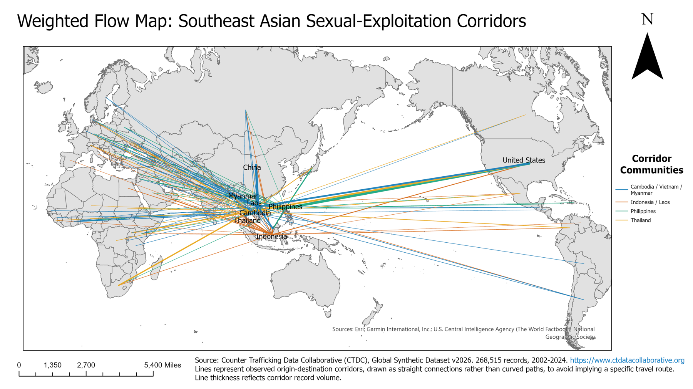
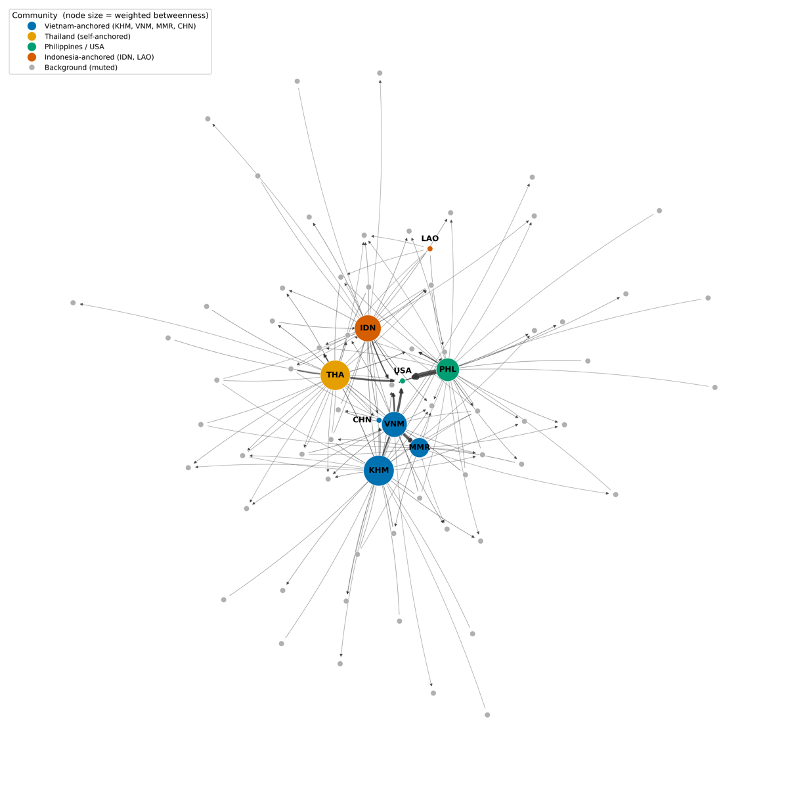
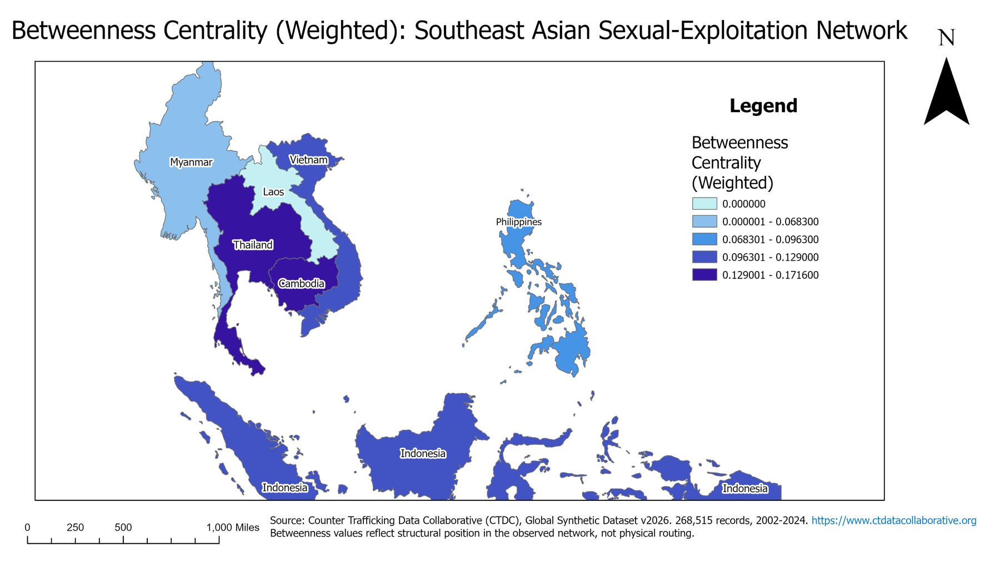
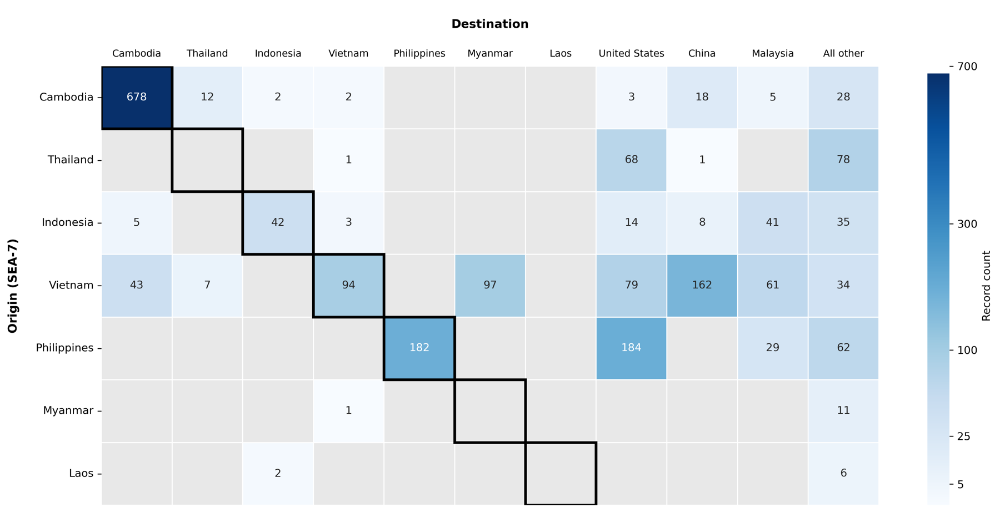
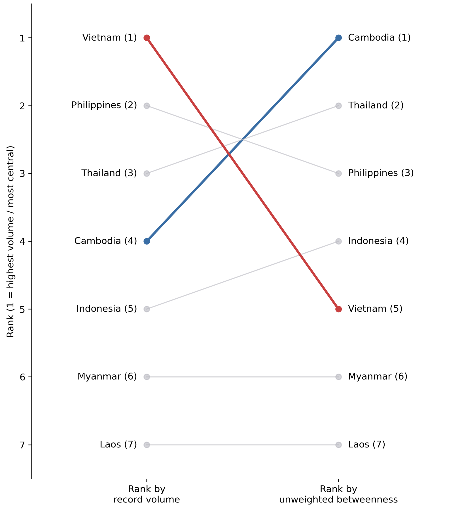
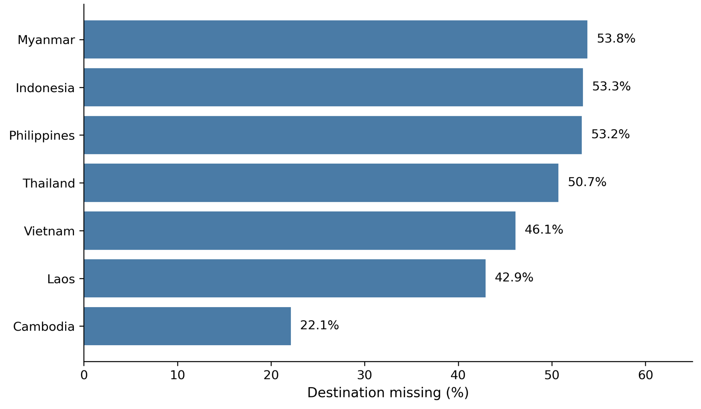
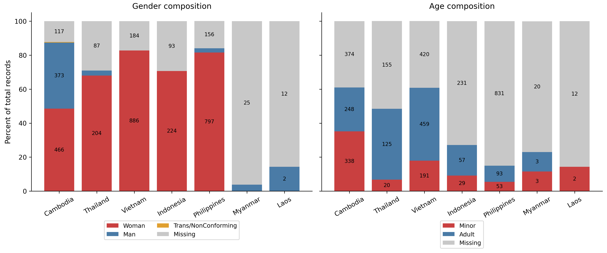

A network analysis of Southeast Asian sexual-exploitation flows | GEOG 594A GEOINT capstone, Penn State | August 2026
About the data: this analysis uses the Counter-Trafficking Data Collaborative (CTDC) Global Synthetic Dataset. The records are synthetic, generated under differential privacy to protect victims and survivors while keeping population-level patterns. All results are at the country level. Because CTDC records only an origin and a destination for each case, network position here is a structural measure, not a claim about the route any victim travelled.
Anti-trafficking resources are limited, and the countries that could receive them are not interchangeable. Choosing where to focus enforcement, cooperation or funding is a geographic choice. This project asks which Southeast Asian country, if any, is the primary chokepoint in the regional sexual-exploitation network, and what explains its position.
The evidence is 1,271 cross-border records drawn from 268,515 records in the CTDC synthetic dataset, 2002 to 2024, for seven origin countries: Cambodia, Indonesia, Laos, Myanmar, the Philippines, Thailand and Vietnam.

This is a mixed-method analysis. Code measures the structure of the network, and structured analysis decides what that structure means.

No single dominant chokepoint. Cambodia (weighted betweenness 0.1716) and Thailand (0.1653) are co-central. Indonesia, Vietnam and the Philippines complete a leading five, and the five are the same with or without corridor volume.

Three methods agree. Betweenness, a node-removal simulation and a cut-vertex test single out the same five countries. Exactly five countries split the network into pieces if removed: Cambodia, Indonesia, the Philippines, Thailand and Vietnam.
Thailand is the best-supported transit candidate. It has no inconsistencies in the hypothesis matrix, and none of its records with a recorded destination are domestic.
Most Cambodian trafficking never crosses a border. 678 Cambodian records are domestic, 90.6% of the 748 with a recorded destination. Cambodia holds the strongest structural position, but most of its recorded harm sits outside the reach of cross-border interdiction.

Volume is not position. Vietnam has the most records of any origin (518) but ranks fifth on unweighted betweenness. Cambodia is the reverse, fourth on volume and first on position. The United States is the largest single destination (348 records) with a betweenness of 0.0098. This is why the analysis ranks countries by network position rather than by case counts.

The data has limits, and they are uneven. Destination is unrecorded for 22.1% of Cambodian records but for 42.9% to 53.8% of records from the other six origins, so every percentage rests on a differently sized base depending on the country.


The practical takeaway. The country where interdiction would have the most structural effect is not the country carrying the most harm. Interdiction and prevention reach different populations. The network can narrow the field, but it cannot make that choice for a decision-maker.
Python notebooks (pandas, NetworkX, GeoPandas) that rebuild the network and the figures: trafficking-network-analysis on GitHub. The raw CTDC data is not included. The repository README explains where to download it.
Source: Counter-Trafficking Data Collaborative (CTDC), May 2026. ctdatacollaborative.org. Used for non-commercial research under the CTDC terms of use.
Use of AI: An AI assistant helped with analysis code, figures, drafting and editing. All analytic decisions, interpretations and conclusions are my own, and I reviewed and verified all output.